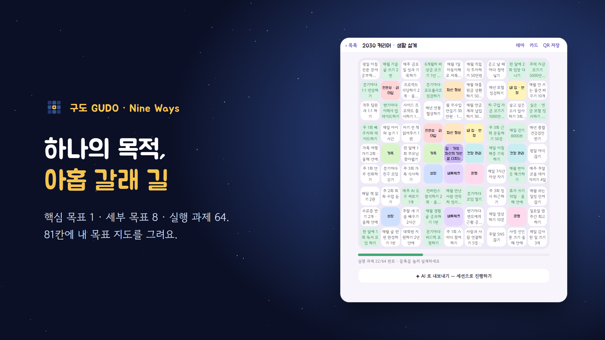
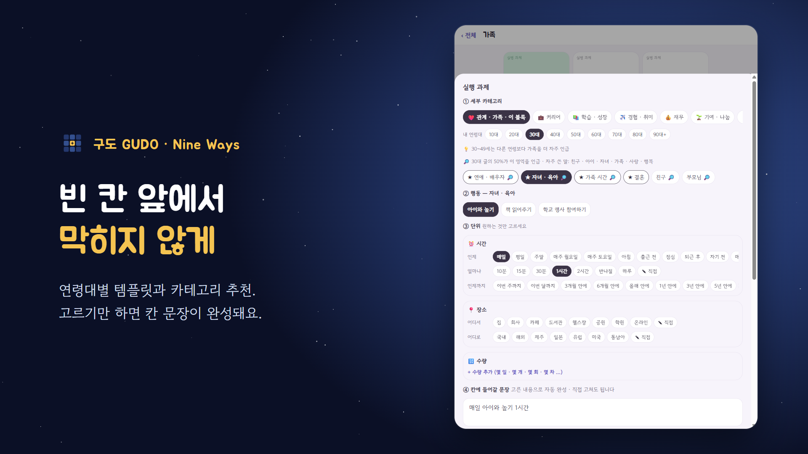
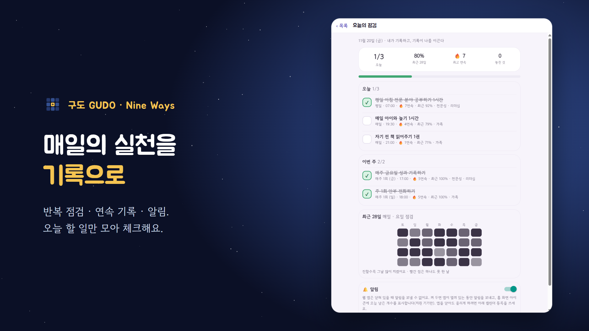
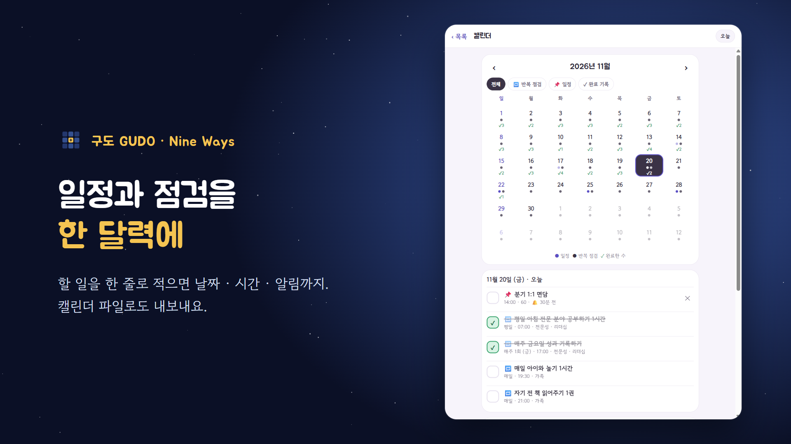
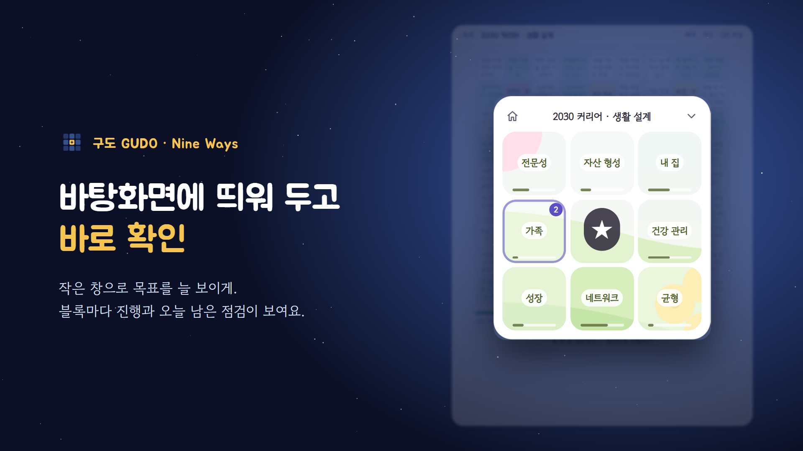
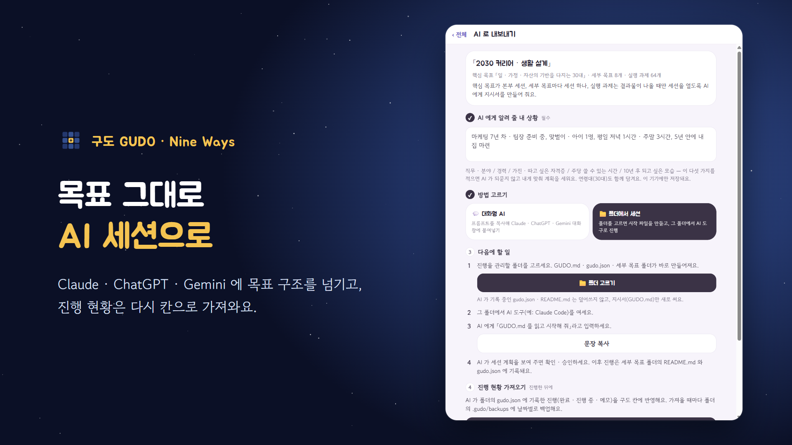
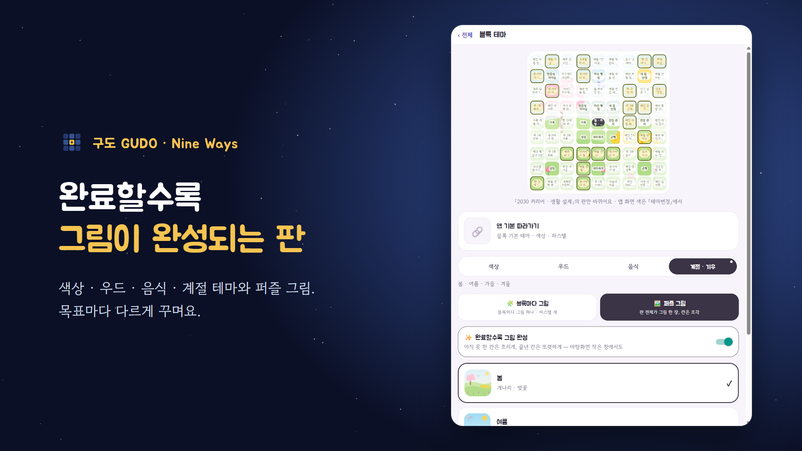

Microsoft Store 제출 안내 — 구도 GUDO
Partner Center › 앱 및 게임 › 구도 GUDO › 제출 시작을 누르면 아래 칸들이 나옵니다. 위에서부터 채우고, 값 옆 「복사」를 눌러 붙여넣으세요.
1가격 및 사용 가능 여부
Pricing and availability
| 시장 | 모든 시장 (기본값 그대로) |
| 표시 여부 | 공개 — Store 에서 검색 가능 |
| 가격 | 무료 |
| 무료 평가판 | 평가판 없음 |
| 출시 일정 | 인증 통과 즉시 출시 |
2속성
Properties
| 범주 | 생산성 (Productivity) · 하위 범주 없음 |
| 개인정보처리방침 URL | https://gudo.pages.dev/privacy |
| 웹 사이트 | https://gudo.pages.dev |
| 지원 연락처 | gudonineway@gmail.com |
| 제품 선언 | 모두 체크 안 함 (Xbox · 펜 · 사용자 데이터 수집 등 해당 없음) |
| 시스템 요구 사항 | 최소 · 권장 모두 비워 두기 (키보드 · 마우스만 쓰면 기본값) |
개인정보처리방침 주소는 지금 실제로 열립니다 (확인함).
3연령 등급
Age ratings — IARC 설문
| 이메일 | gudonineway@gmail.com |
| 앱 종류 | 「게임이 아닌 앱」 — 유틸리티 · 생산성 · 통신 · 기타 |
| 폭력 · 성적 · 언어 · 약물 등 | 모두 아니요 |
| 사용자끼리 대화 · 공유 콘텐츠 | 아니요 — 채팅 없음 (팀 초대 코드는 사용자가 직접 복사해 전달) |
| 위치 공유 | 아니요 |
| 디지털 상품 구매 | 아니요 |
| 제한 없는 인터넷 접속(웹 브라우저 기능) | 아니요 — 자기 사이트 화면만 엶 |
결과는 보통 「3+ / 모든 연령」으로 나옵니다.
4패키지
Packages
- 올릴 파일 (약 156MB) — 탐색기에서 이 폴더를 열어 끌어다 놓기:
| 파일 | C:\Claude\01. Career\career-mandalart\desktop\out\GUDO-Store.appx |
| 장치 패밀리 | Windows 10/11 Desktop 만 체크 (Xbox · Holographic 등은 해제) |
「runFullTrust 제한된 기능」을 쓰는 이유를 묻는 칸이 나오면:
| 사유 (영어) | GUDO is an Electron desktop app. runFullTrust is required to run the Win32 desktop process that shows the app window, the desktop mini widget window and the system tray icon. The app does not collect user data; everything is stored locally. |
업로드 후 「패키지 확인 완료」가 뜰 때까지 기다리세요. 이름 · 게시자 오류가 나면 화면을 캡처해서 보여 주세요.
5스토어 등록 정보
Store listings — 패키지 언어가 한국어 · 영어라 두 언어 모두 채워야 합니다
한국어 (ko-kr)
| 제품 이름 | 구도 GUDO (예약한 이름 자동) |
| 설명 | 구도(GUDO · Nine Ways)는 만다라트(9×9 목표표) 방식으로 목표를 설계하고 실천을 점검하는 앱입니다. - 핵심 목표 하나 → 세부 목표 8개 → 실행 과제 64개. 부담되면 1 · 3 · 5 · 7칸으로 작게 시작 - 연령대별 템플릿과 카테고리 추천으로 빈 칸 앞에서 막히지 않게 - 반복 점검 · 오늘의 점검 · 캘린더 · 알림으로 매일의 실천을 기록 - 바탕화면 작은 창 — 목표를 띄워 두고 바로 확인 - AI 로 내보내기 — 목표 구조 그대로 Claude · ChatGPT · Gemini 세션을 시작하고, 진행 현황을 다시 가져와 칸에 반영 - 팀 목표 — 서버 없이 초대장으로 블록마다 담당자를 정해 함께 보기 - 테마 · 퍼즐 그림 · 이미지 카드 - 회원가입 · 서버 없음. 모든 내용은 내 PC 에만 저장 |
| 짧은 설명 | 하나의 목적을 아홉 갈래 길로 — 81칸 목표 지도를 그리고, 바탕화면에 띄워 두고, AI 세션으로 진행하세요. |
| 제품 기능 (한 줄씩 칸마다) | 81칸 목표 지도 (1 · 3 · 5 · 7 · 9칸) 연령대별 템플릿 · 카테고리 추천 반복 점검 · 캘린더 · 알림 바탕화면 작은 창 AI 세션 내보내기 · 진행 현황 자동 동기화 서버 없이 팀 목표 회원가입 없음 · 내 PC 에만 저장 |
| 검색어 (칸마다 하나, 최대 7) | 만다라트, 목표, 계획, 습관, 체크리스트, AI, 생산성 |
| 저작권 | © 2026 GUDO |
| 새로운 기능 | 비워 두기 (첫 출시) |
스크린샷 (데스크톱) — 이 순서로 7장, 폴더 docs\store\microsoft\







| 스크린샷 폴더 | C:\Claude\01. Career\docs\store\microsoft |
Store 로고 · 포스터 아트는 선택 — 비워 두면 패키지 아이콘을 씁니다.
English (en-us) — 「언어 추가」 후
| Description | GUDO (Nine Ways) helps you design goals with the Mandal-Art 9×9 method and track daily practice. - One core goal → 8 sub-goals → 64 actions. Start small with 1, 3, 5 or 7 cells - Age-based templates and category suggestions - Routines, today's check, calendar and reminders - Desktop mini window to keep a goal in sight - Export to AI — start Claude, ChatGPT or Gemini sessions with your goal structure and sync progress back - Team goals without a server — invite owners per block - Themes, puzzle pictures and image cards - No sign-up, no server. Everything stays on your PC |
| Short description | One purpose, nine ways — map your goals on 81 cells, keep them on your desktop, and run them as AI sessions. |
| Product features | 81-cell goal map (1, 3, 5, 7 or 9 cells) Age-based templates and category suggestions Routines, calendar and reminders Desktop mini window AI session export with progress sync Team goals without a server No sign-up, everything stays on your PC |
| Search terms | mandalart, goals, planner, habits, checklist, AI, productivity |
| Copyright | © 2026 GUDO |
| Screenshots | 같은 7장을 올려도 됩니다 (앱 화면이 한국어라). 영어판 그림이 필요하면 말해 주세요. |
6제출 옵션
Submission options
| 게시 보류 | 「인증 통과 즉시 게시」 |
| 인증 참고 사항 (Notes for certification) | No account or sign-in is needed. On first launch the app creates a sample goal; open it to see the 9×9 board. The window loads the app UI from https://gudo.pages.dev (our own site). The tray icon and the desktop mini window ("바탕화면에 띄우기" on a goal card) are why runFullTrust is declared. All data is stored locally; nothing is collected. |
7제출
- 모든 칸이 「완료」가 되면 오른쪽 아래 Store 에 제출.
- 인증은 보통 몇 시간 ~ 3영업일. 결과는 메일과 Partner Center 에 옵니다.
- 거절되면 사유 화면을 캡처해서 보여 주세요 — 고쳐서 다시 올리면 됩니다.
- 출시되면 주소:
https://apps.microsoft.com/detail/9MZG3RSX4DZ1